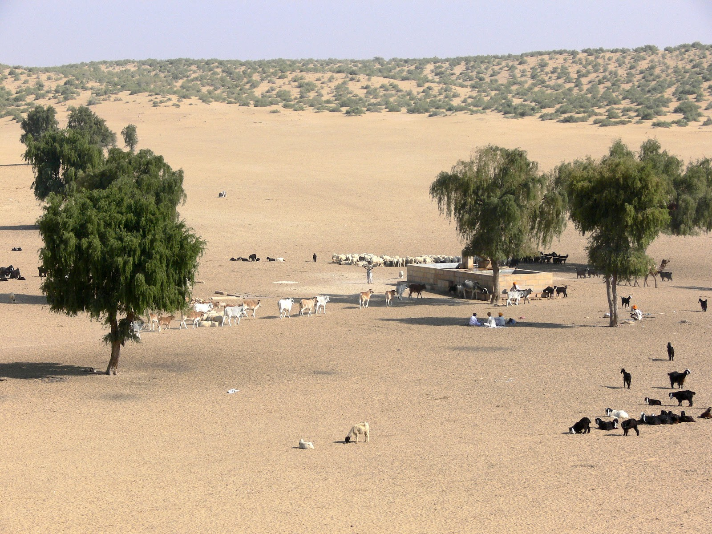
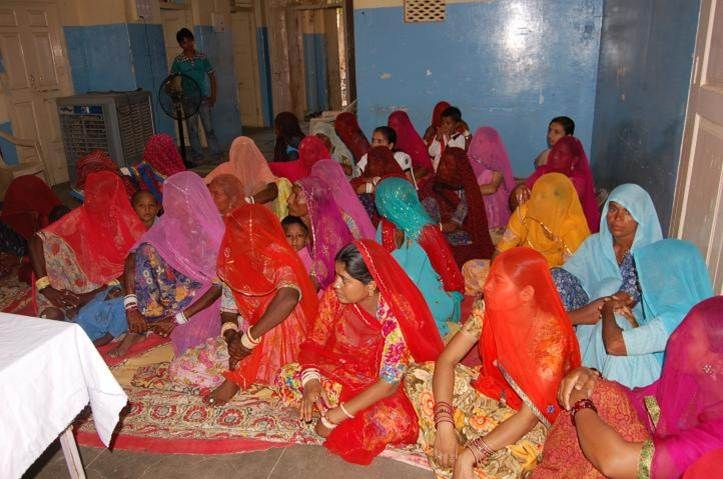
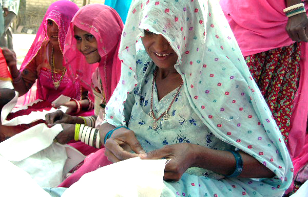
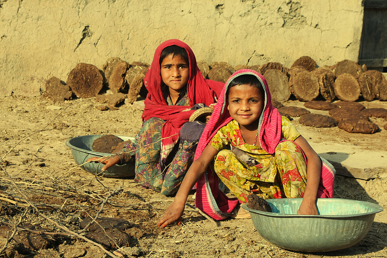
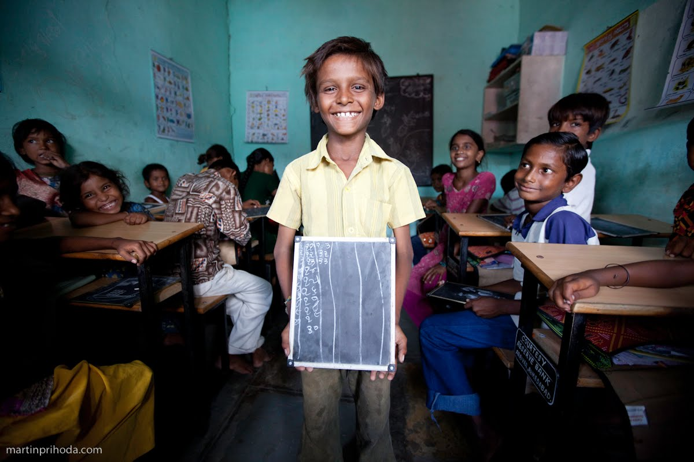
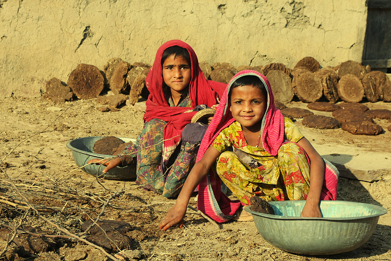
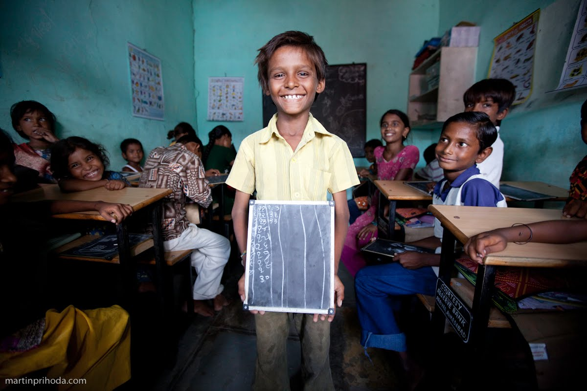
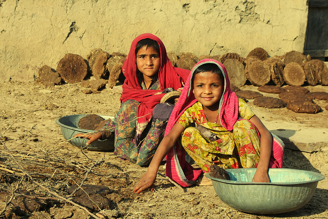
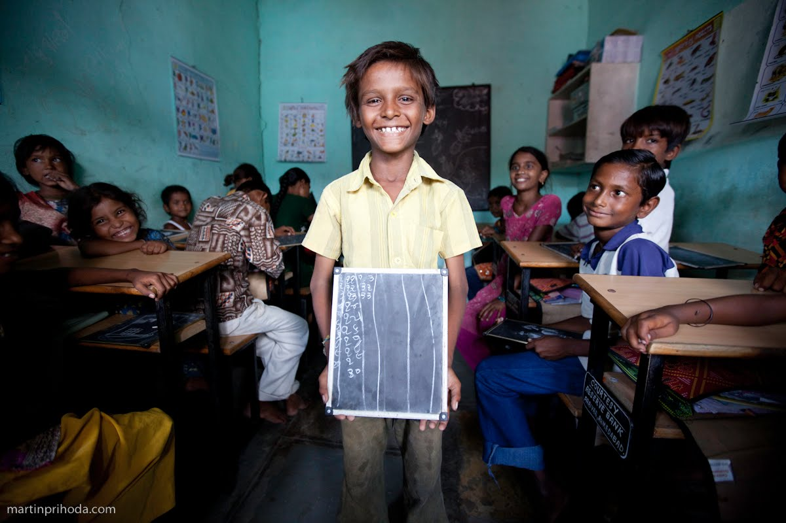

G
V
S
Introduction
Gramin Vikas Sansthan was founded in the year 1995 by its current Secratary Shri Dungraram Bishnoi in Dhorimanna. Since his childhood he was very concerned about the situation
of the rural people. The rurals were very poor, living and health conditions remained poor as they had no money for food , medicines,etc.
Seeing all this Dungraram ji decided to open a non-profitable NGO, the first of its kind in whole Barmer, in order to help the rural people especially the backward classes.
It is a non government, not profitable, and non politicle association. It has been operating since past 17 years in Barmer's Guda Malani Tehsil's 42 villages in the
fields of awareness, providing drinking water,primary health, training ,forming SHGS,etc



 






Vision
To see the people in rural areas feed earn enough to feed them and their family properly. The women gain their respect in front of the society, and enjoy
equal status to men. Children go to school and get education instead of working at dhabas, etc.
Mission
- - Educate the rural people
- - Betterment of women
- - Impart technical skills to rural people in order to help them find employement
- - Help the rurals and their cattles during droughts or natural calamities